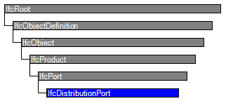
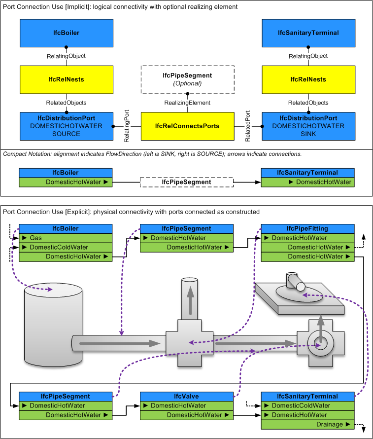

Natural language names
 | Anschluss / Port |
 | Distribution Port |
 | Port de distribution |
| Anschluss / Port |
| Distribution Port |
| Port de distribution |
| Item | SPF | XML | Change | Description | IFC2x3 to IFC4 |
|---|---|---|---|---|
| IfcDistributionPort | ||||
| OwnerHistory | MODIFIED | Instantiation changed to OPTIONAL. | ||
| PredefinedType | ADDED | |||
| SystemType | ADDED |
A distribution port is an inlet or outlet of a product through which a particular substance may flow.
Distribution ports are used for passage of solid, liquid, or gas substances, as well as electricity for power or communications. Flow segments (pipes, ducts, cables) may be used to connect ports across products. Distribution ports are defined by system type and flow direction such that for two ports to be connected, they must share the same system type and have opposite flow directions (one side being a SOURCE and the other being a SINK). Ports are similar to openings in that they do not have any visible geometry; such geometry is captured at the shape representation of the enclosing element or element type. Ports may have placement that indicates the position and orientation of the connection.
HISTORY New entity in IFC2x2
IFC4 CHANGE Ports are now related to products and product types using the IfcRelNests relationship; use of IfcRelConnectsPortToElement is now reserved for dynamically attached ports (such as drilling a hole in a tank).
| # | Attribute | Type | Cardinality | Description | C |
|---|---|---|---|---|---|
| 8 | FlowDirection | IfcFlowDirectionEnum | [0:1] | Enumeration that identifies if this port is a Sink (inlet), a Source (outlet) or both a SinkAndSource. | X |
| 9 | PredefinedType | IfcDistributionPortTypeEnum | [0:1] | X | |
| 10 | SystemType | IfcDistributionSystemEnum | [0:1] | Enumeration that identifies the system type. If a system type is defined, the port may only be connected to other ports having the same system type. | X |

| # | Attribute | Type | Cardinality | Description | C |
|---|---|---|---|---|---|
| IfcRoot | |||||
| 1 | GlobalId | IfcGloballyUniqueId | [1:1] | Assignment of a globally unique identifier within the entire software world. | X |
| 2 | OwnerHistory | IfcOwnerHistory | [0:1] |
Assignment of the information about the current ownership of that object, including owning actor, application, local identification and information captured about the recent changes of the object,
NOTE only the last modification in stored - either as addition, deletion or modification. | X |
| 3 | Name | IfcLabel | [0:1] | Optional name for use by the participating software systems or users. For some subtypes of IfcRoot the insertion of the Name attribute may be required. This would be enforced by a where rule. | X |
| 4 | Description | IfcText | [0:1] | Optional description, provided for exchanging informative comments. | X |
| IfcObjectDefinition | |||||
| HasAssignments | IfcRelAssigns @RelatedObjects | S[0:?] | Reference to the relationship objects, that assign (by an association relationship) other subtypes of IfcObject to this object instance. Examples are the association to products, processes, controls, resources or groups. | X | |
| Nests | IfcRelNests @RelatedObjects | S[0:1] | References to the decomposition relationship being a nesting. It determines that this object definition is a part within an ordered whole/part decomposition relationship. An object occurrence or type can only be part of a single decomposition (to allow hierarchical strutures only). | X | |
| IsNestedBy | IfcRelNests @RelatingObject | S[0:?] | References to the decomposition relationship being a nesting. It determines that this object definition is the whole within an ordered whole/part decomposition relationship. An object or object type can be nested by several other objects (occurrences or types). | X | |
| HasContext | IfcRelDeclares @RelatedDefinitions | S[0:1] | References to the context providing context information such as project unit or representation context. It should only be asserted for the uppermost non-spatial object. | X | |
| IsDecomposedBy | IfcRelAggregates @RelatingObject | S[0:?] | References to the decomposition relationship being an aggregation. It determines that this object definition is whole within an unordered whole/part decomposition relationship. An object definitions can be aggregated by several other objects (occurrences or parts). | X | |
| Decomposes | IfcRelAggregates @RelatedObjects | S[0:1] | References to the decomposition relationship being an aggregation. It determines that this object definition is a part within an unordered whole/part decomposition relationship. An object definitions can only be part of a single decomposition (to allow hierarchical strutures only). | X | |
| HasAssociations | IfcRelAssociates @RelatedObjects | S[0:?] | Reference to the relationship objects, that associates external references or other resource definitions to the object.. Examples are the association to library, documentation or classification. | X | |
| IfcObject | |||||
| 5 | ObjectType | IfcLabel | [0:1] |
The type denotes a particular type that indicates the object further. The use has to be established at the level of instantiable subtypes. In particular it holds the user defined type, if the enumeration of the attribute PredefinedType is set to USERDEFINED.
| X |
| IsDeclaredBy | IfcRelDefinesByObject @RelatedObjects | S[0:1] | Link to the relationship object pointing to the declaring object that provides the object definitions for this object occurrence. The declaring object has to be part of an object type decomposition. The associated IfcObject, or its subtypes, contains the specific information (as part of a type, or style, definition), that is common to all reflected instances of the declaring IfcObject, or its subtypes. | X | |
| Declares | IfcRelDefinesByObject @RelatingObject | S[0:?] | Link to the relationship object pointing to the reflected object(s) that receives the object definitions. The reflected object has to be part of an object occurrence decomposition. The associated IfcObject, or its subtypes, provides the specific information (as part of a type, or style, definition), that is common to all reflected instances of the declaring IfcObject, or its subtypes. | X | |
| IsTypedBy | IfcRelDefinesByType @RelatedObjects | S[0:1] | Set of relationships to the object type that provides the type definitions for this object occurrence. The then associated IfcTypeObject, or its subtypes, contains the specific information (or type, or style), that is common to all instances of IfcObject, or its subtypes, referring to the same type. | X | |
| IsDefinedBy | IfcRelDefinesByProperties @RelatedObjects | S[0:?] | Set of relationships to property set definitions attached to this object. Those statically or dynamically defined properties contain alphanumeric information content that further defines the object. | X | |
| IfcProduct | |||||
| 6 | ObjectPlacement | IfcObjectPlacement | [0:1] | Placement of the product in space, the placement can either be absolute (relative to the world coordinate system), relative (relative to the object placement of another product), or constraint (e.g. relative to grid axes). It is determined by the various subtypes of IfcObjectPlacement, which includes the axis placement information to determine the transformation for the object coordinate system. | X |
| 7 | Representation | IfcProductRepresentation | [0:1] | Reference to the representations of the product, being either a representation (IfcProductRepresentation) or as a special case a shape representations (IfcProductDefinitionShape). The product definition shape provides for multiple geometric representations of the shape property of the object within the same object coordinate system, defined by the object placement. | X |
| ReferencedBy | IfcRelAssignsToProduct @RelatingProduct | S[0:?] | Reference to the IfcRelAssignsToProduct relationship, by which other products, processes, controls, resources or actors (as subtypes of IfcObjectDefinition) can be related to this product. | X | |
| IfcPort | |||||
| ContainedIn | IfcRelConnectsPortToElement @RelatingPort | S[0:1] | Reference to the element to port connection relationship. The relationship then refers to the element in which this port is contained. | X | |
| ConnectedFrom | IfcRelConnectsPorts @RelatedPort | S[0:1] | Reference to a port that is connected by the objectified relationship. | X | |
| ConnectedTo | IfcRelConnectsPorts @RelatingPort | S[0:1] | Reference to the port connection relationship. The relationship then refers to the other port to which this port is connected. | X | |
| IfcDistributionPort | |||||
| 8 | FlowDirection | IfcFlowDirectionEnum | [0:1] | Enumeration that identifies if this port is a Sink (inlet), a Source (outlet) or both a SinkAndSource. | X |
| 9 | PredefinedType | IfcDistributionPortTypeEnum | [0:1] | X | |
| 10 | SystemType | IfcDistributionSystemEnum | [0:1] | Enumeration that identifies the system type. If a system type is defined, the port may only be connected to other ports having the same system type. | X |
Property Sets for Objects
The Property Sets for Objects concept applies to this entity as shown in Table 217.
| ||||||||||||
Table 217 — IfcDistributionPort Property Sets for Objects |
Port Nesting
The Port Nesting concept applies to this entity.
Distribution ports are indicated on products and product types using the IfcRelNests relationship where RelatingObject refers to the enclosing IfcDistributionElement or IfcDistributionElementType respectively. The order of ports indicates logical ordering such within outlets, junction boxes, or communications equipment.
Ports may be further nested into sub-ports, for indicating specific connections on components or pins.
Product Assignment
The Product Assignment concept applies to this entity as shown in Table 218.
| ||||||
Table 218 — IfcDistributionPort Product Assignment |
The IfcDistributionPort may be assigned to the following entities using relationships as indicated:
Port Connectivity
The Port Connectivity concept applies to this entity.
IfcDistributionPort may be connected to other objects as follows using the indicated relationship:
Figure 261 illustrates distribution port connectivity.
 |
Figure 261 — Distribution port connectivity |
Product Local Placement
The Product Local Placement concept applies to this entity.
The placement of a port indicates the position and orientation of how it may connect to a compatible port on another product. The placement shall be relative to the nesting IfcDistributionElement, IfcDistributionElementType, or enclosing IfcDistributionPort.
The Location is the midpoint of the physical connection, unless otherwise indicated by cardinal point on a material profile.
The Axis points in the direction of the physical connection away from the product if FlowDirection equals SOURCE (or SOURCEANDSINK or NOTDEFINED), or points opposite direction (to the product) if the FlowDirection equals SINK.
NOTE The rationale for positioning the Axis in the direction of flow is to allow for the same geometry to be used, such as for connectors with polarized cross-section.
The RefDirection points in the direction of the local X axis of the material profile, where the local Y axis points up if looking towards the Axis where the local X axis points right.
Upon connecting elements through ports with rigid connections, each object shall be aligned such that the effective Location, Axis, and RefDirection of each port is aligned to be equal (with exception for circular profiles where the RefDirection need not be equal).
| # | Concept | Model View |
|---|---|---|
| IfcRoot | ||
| Software Identity | Common Use Definitions | |
| Revision Control | Common Use Definitions | |
| IfcObject | ||
| Object Occurrence Predefined Type | Common Use Definitions | |
| IfcDistributionPort | ||
| Property Sets for Objects | Common Use Definitions | |
| Port Nesting | Common Use Definitions | |
| Product Assignment | Common Use Definitions | |
| Port Connectivity | Common Use Definitions | |
| Product Local Placement | Common Use Definitions | |
<xs:element name="IfcDistributionPort" type="ifc:IfcDistributionPort" substitutionGroup="ifc:IfcPort" nillable="true"/>
<xs:complexType name="IfcDistributionPort">
<xs:complexContent>
<xs:extension base="ifc:IfcPort">
<xs:attribute name="FlowDirection" type="ifc:IfcFlowDirectionEnum" use="optional"/>
<xs:attribute name="PredefinedType" type="ifc:IfcDistributionPortTypeEnum" use="optional"/>
<xs:attribute name="SystemType" type="ifc:IfcDistributionSystemEnum" use="optional"/>
</xs:extension>
</xs:complexContent>
</xs:complexType>
ENTITY IfcDistributionPort
SUBTYPE OF (IfcPort);
FlowDirection : OPTIONAL IfcFlowDirectionEnum;
PredefinedType : OPTIONAL IfcDistributionPortTypeEnum;
SystemType : OPTIONAL IfcDistributionSystemEnum;
END_ENTITY;
 Instance diagram
Instance diagram Link to this page
Link to this page